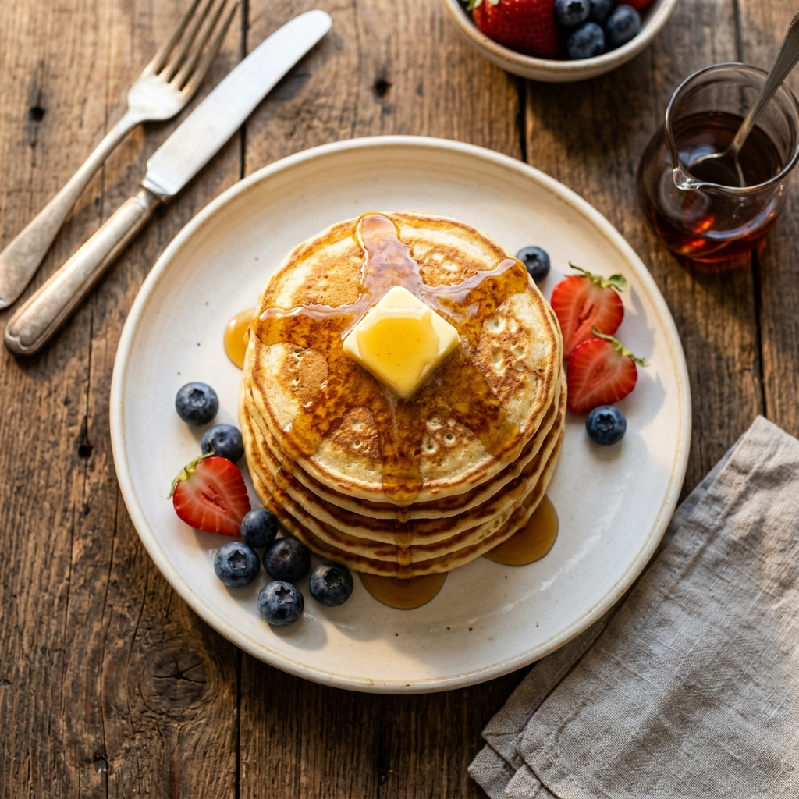
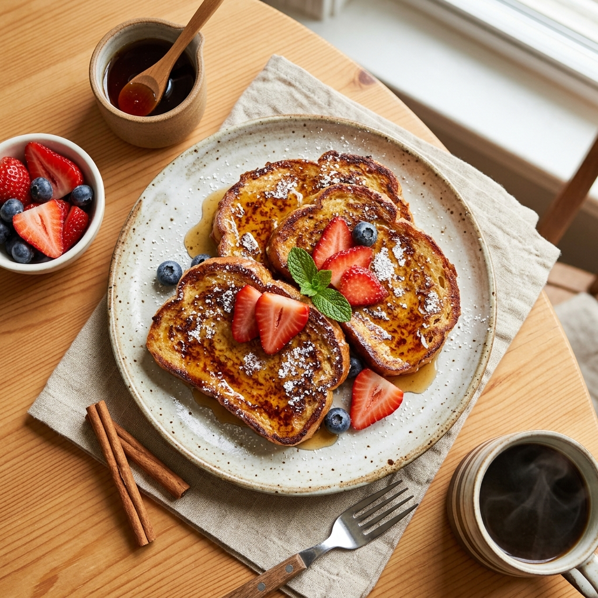
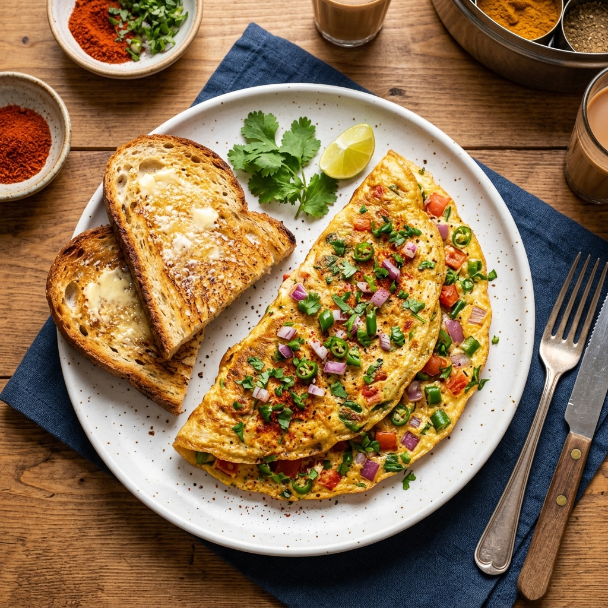
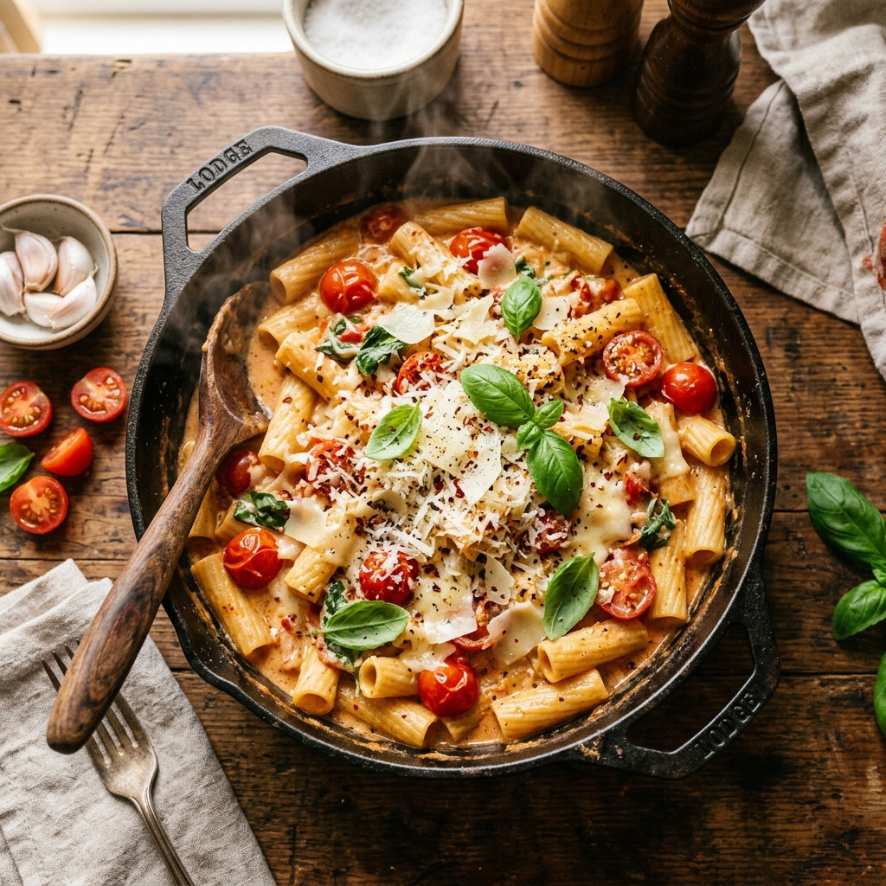
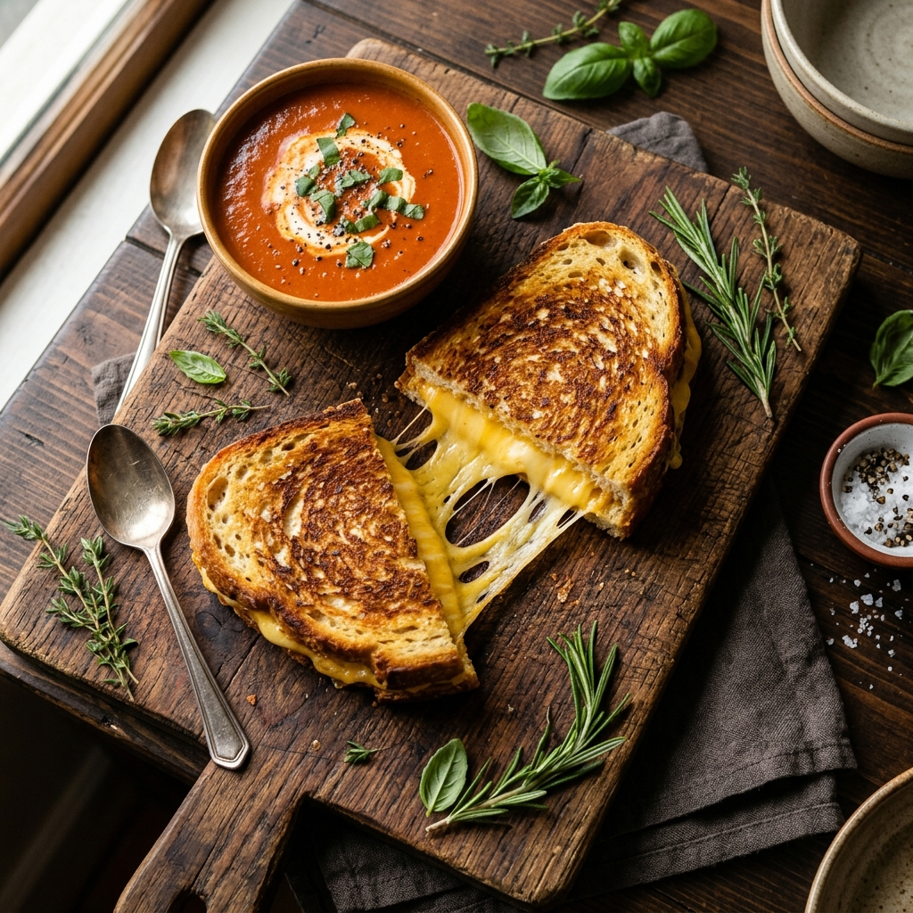

Welcome to Quick Bite Recipes
Whether you are a college student, a working professional, or just someone who loves good food without the fuss — we have got you covered. Every recipe here is designed to be quick, induction-friendly, and absolutely delicious. No complicated techniques, no hard-to-find ingredients. Just real food, made simple.
Featured Recipes

Classic Pancakes
Veg
Easy
Breakfast
Prep: 5 min · Cook: 15 min
Fluffy, golden pancakes made from scratch. Stack them high, drizzle with maple syrup, and start your morning right.
View Recipe →

French Toast
Non-Veg
Easy
Breakfast
Prep: 5 min · Cook: 10 min
Crispy on the outside, custardy on the inside. This classic breakfast staple turns day-old bread into something extraordinary.
View Recipe →

Masala Omelette
Non-Veg
Easy
Breakfast
Prep: 5 min · Cook: 5 min
The Indian street-style omelette packed with onions, tomatoes, green chillies, and fresh coriander. Done in under ten minutes.
View Recipe →

One-Pot Pasta
Veg
Easy
Main Course
Prep: 5 min · Cook: 20 min
Everything goes in one pot — pasta, tomatoes, garlic, basil. Twenty minutes later, you have a creamy, comforting dinner.
View Recipe →

Grilled Cheese
Veg
Easy
Snack
Prep: 3 min · Cook: 8 min
Golden, crispy bread with stretchy melted cheese inside. The ultimate comfort food that never goes out of style.
View Recipe →